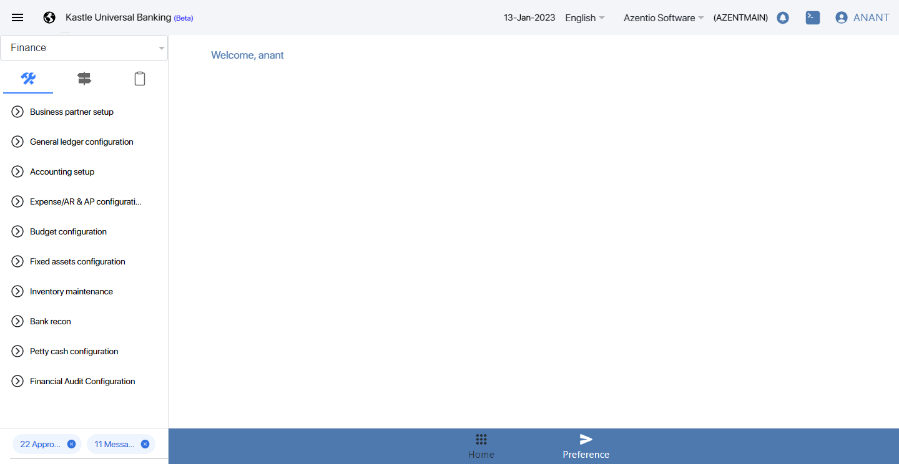
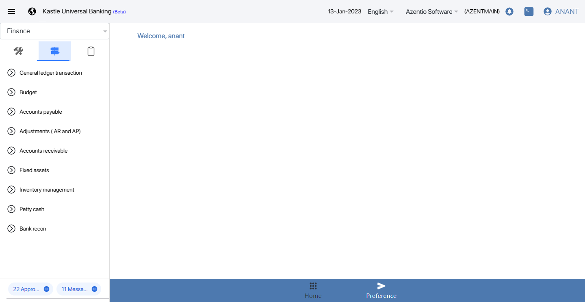
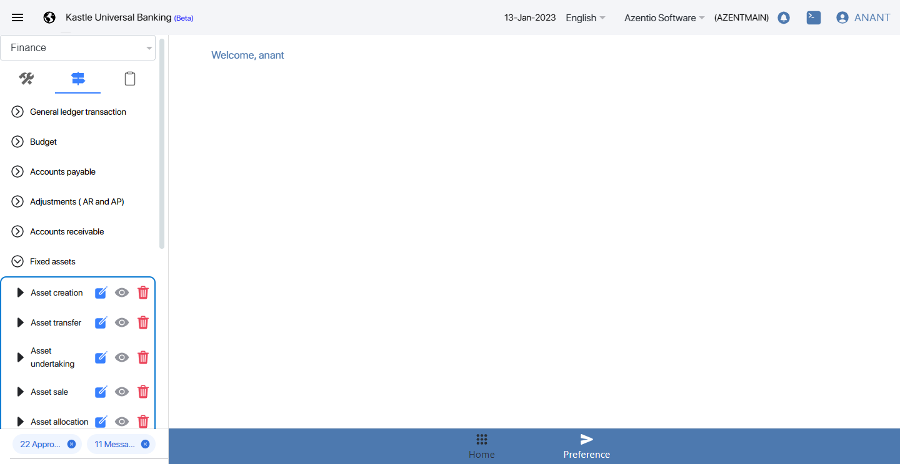
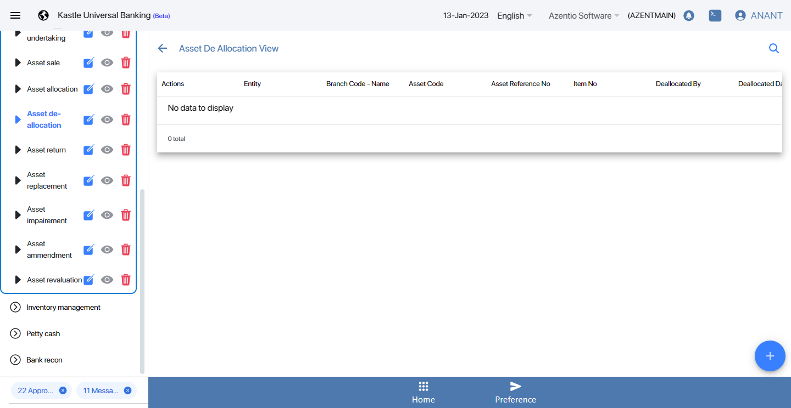

-
Check the Functionality of Fixed Asset module
14:13:31 PM / 03:38:465 Fail
Check the Functionality of Fixed Asset module
04.18.2022 14:13:31 04.18.2022 14:47:09 03:38:465 · #test-id=1FailCheck if the replaced asset can be returned to its vendorGiven Navigate the Azentio urlstepdefinitions.HooksClass.addScreenshot(io.cucumber.java.Scenario)screenshotThen Click Second Segmant Iconstepdefinitions.HooksClass.addScreenshot(io.cucumber.java.Scenario)screenshotAnd Click main module fixed Asset Modulestepdefinitions.HooksClass.addScreenshot(io.cucumber.java.Scenario)screenshotThen Asset Replacement Store the Referance Nostepdefinitions.HooksClass.addScreenshot(io.cucumber.java.Scenario)screenshotThen Asset Return Click on Eye IconStep skippedAnd Asset Return Add Icon buttonStep skippedThen Give Asset Replacement Referance NumberStep skippedAnd Select Asset Return Item NumberStep skippedThen Click on save button in asset ReturnStep skippedAnd Click on Maker Notification icon buttonStep skippedThen Click on Action iconStep skippedAnd Approve the Asset Return RecordStep skippedThen Enter Remark and click submit buttonStep skippedGiven Launch the Azentio URL as ReviewerStep skippedAnd Reviewer Notification icon buttonStep skippedThen Click ACtion submitted record from makerStep skippedAnd Click Approve button from Reviewer EndStep skippedThen Enter remark then submit RecordStep skippedGiven Launch the Azentio Checker URLStep skippedThen Main module Security managementStep skippedAnd Sub module open pool Edit iconStep skippedThen Claim the record in checkerStep skippedAnd Click Checker Notification icon buttonStep skippedThen Action Icon from claim recordStep skippedAnd Click Approve icon buttonStep skippedThen Submit the Record from CheckerStep skippedGiven Navigate the Azentio urlStep skippedThen Click Second Segmant IconStep skippedAnd Click main module fixed Asset ModuleStep skippedThen Asset Return Click on Eye IconStep skippedAnd Mouse click on search iconStep skippedThen Enter Asset Referance No in that fieldStep skippedWhen capture the Asset Grid view listStep skipped
Started
Apr 18, 2022 02:13:29 PM
Ended
Apr 18, 2022 02:47:09 PM
Features Passed
0
Features Failed
1
Features
Scenarios
Steps
Timeline
Tags
| Name | Passed | Failed | Skipped | Others | Passed % |
|---|---|---|---|---|---|
| @KUBS_FAT_UAT_007_005 | 0 | 1 | 0 | 0 | 0% |
System/Environment
| Name | Value |
|---|---|
| version | 10 |
| os | windows |
-
@KUBS_FAT_UAT_007_005
1 tests
@KUBS_FAT_UAT_007_005
1 failedStatus Timestamp TestName Fail 14:13:31 PM Check if the replaced asset can be returned to its vendor Check the Functionality of Fixed Asset module.Check if the replaced asset can be returned to its vendor
-
org.openqa.selenium.TimeoutException
1 tests
org.openqa.selenium.TimeoutException
1 failedStatus Timestamp TestName Fail 14:13:47 PM Then Asset Replacement Store the Referance No Check the Functionality of Fixed Asset module.Check if the replaced asset can be returned to its vendor.Then Asset Replacement Store the Referance No